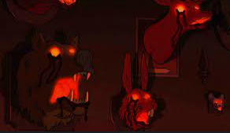

My Favorite series of all time is a show called Gravity Falls
Though it looks like its a kids show just as the creator says
Yea sure...
Anyway I will now rank my favorite characters in the series and describe them.
| Character | Picture | Why their my Fav/Description |
|---|---|---|
| Dipper Pines | One of the Main Characters in the story. He is my favorite character because either He is smart shy and has a sibling. Dipper and his sister go through a lot in the show but they still are siblings in the end. :> | |
| Mabel Pines | Another one of the Main characters and the twin sister to dipper. She is also my favorite because she is the opposite of dipper. With her being exstatic social and somehow always wears a sweater even if the story is set in the SUMMER. AS I said for Dipper the twins go through the series together but still fight (very realistic) in the end they still spend their last summer as 12 year olds. | |
| Stan Pines | The Uncle of dipper and mabel who owns the Mystery shack the place where Dipper and Mabel stay for the summer (and work) as Stan scams people with fake creatures. Though acting as funny uncle he later becomes a key part of the mystery of the show that made me want to learn more about him. I stan for Stan | |
| Soos | He is the fixer of the Mystery shack and helps the family while doing it. He is cool and once in the story was gifted a wish for anything in the world from a time baby so obviously wished for a infinite pizza that regenerates. (im not joking this is a real plot point) | |
| Waddles | He is a pig and the pet for Mabel. Do I need to explain why I love him. Waddles is love Waddles is life. | |
| Bill Cipher | The Main villain of the story. In my opinion one of the best villains for any show. From his name cipher we find hints to future episodes from hidden codes throughout the series with him being the center of it. He was also called Dorito guy from the creator. |